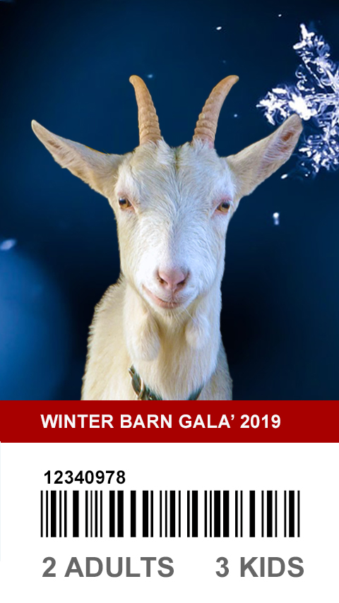
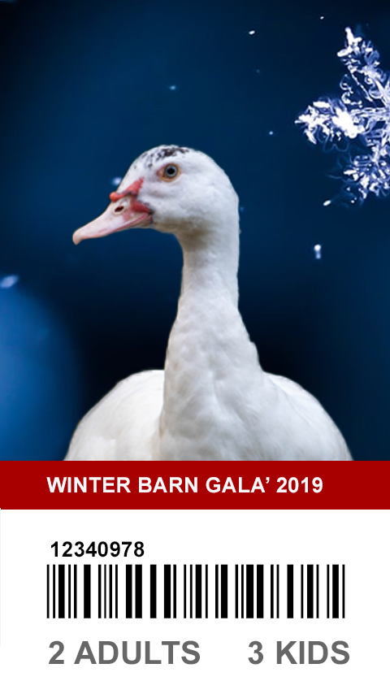

GRAPHIC DESIGN PIECES
“It’s through mistakes that you actually can grow. You have to get bad in order to get good.”
Paula Scher, an identity designer known for her bold use of street typography
My undergrad was in Foreign Languages and Literatures. Before joining Umich as a graduate student specializing in UX Design and Research, I have only taken one college-level course about Human-Computer Interaction. In short, I am very, very new to this field compared to others in this program. However, I’m learning tons and building up the skills required for a UX designer. This semester, I am taking a graphic design course, SI520, and the following are the works I have done so far.
Tickets with cute farm animals and snowflake background



Below are some banners I created for several Umich LSA courses